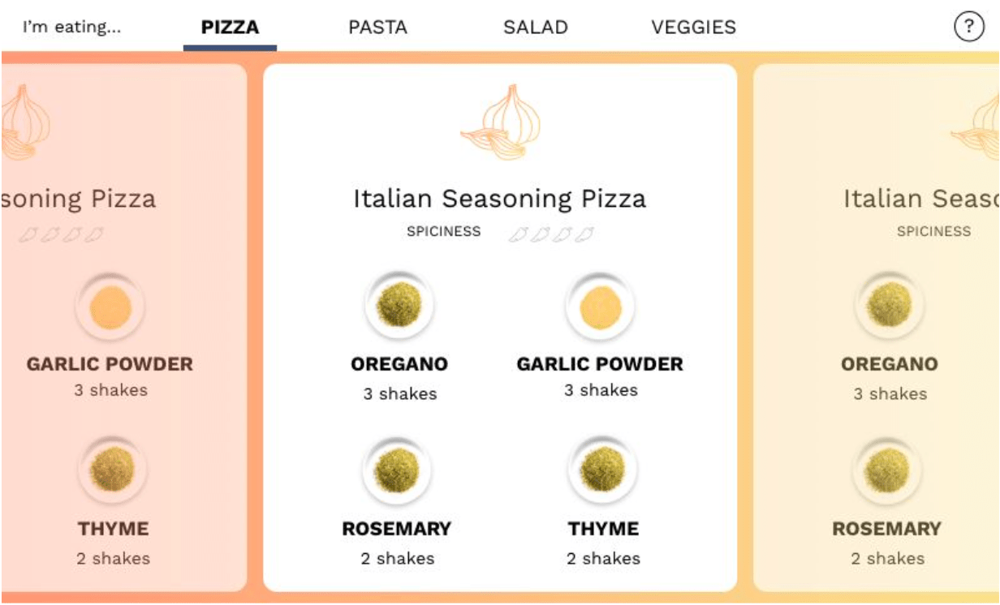
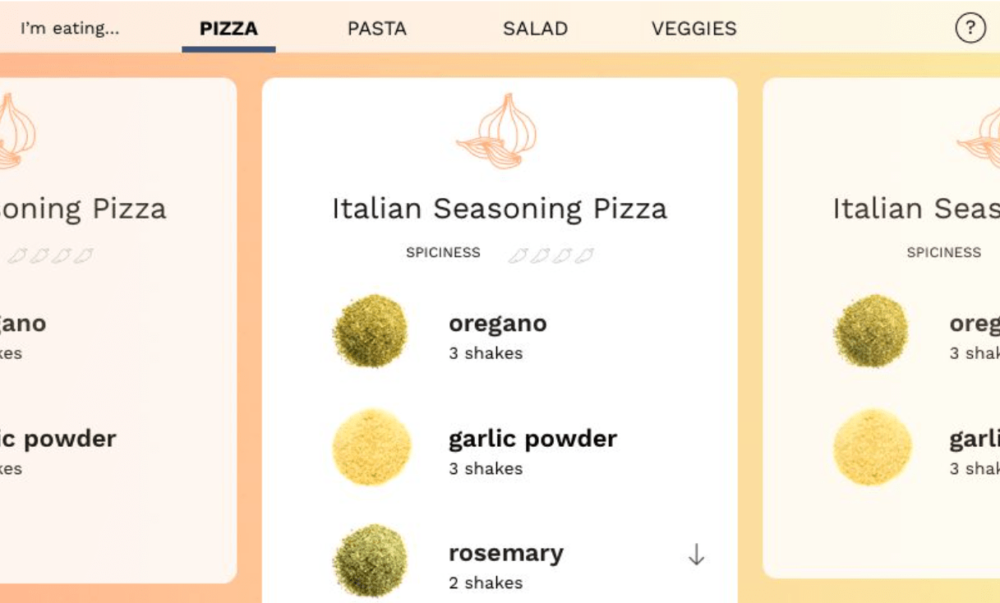
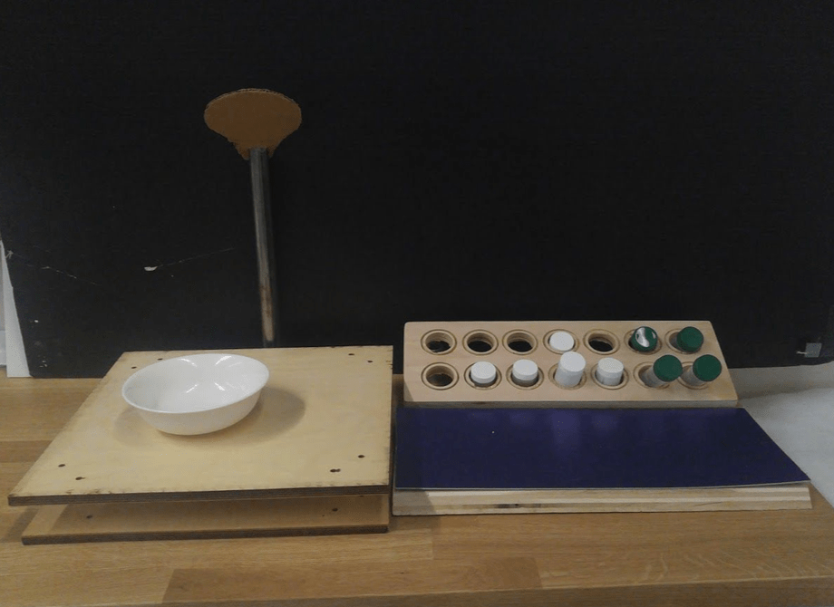
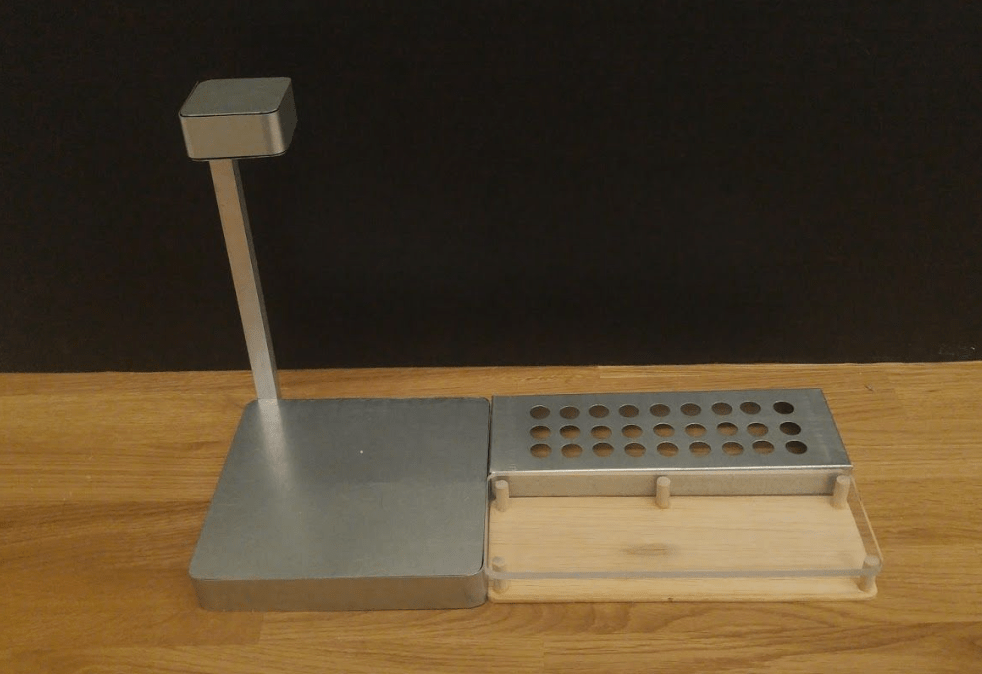
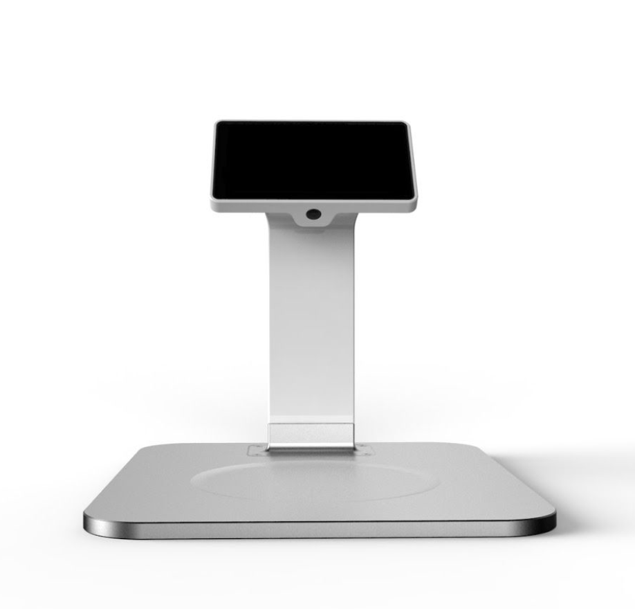
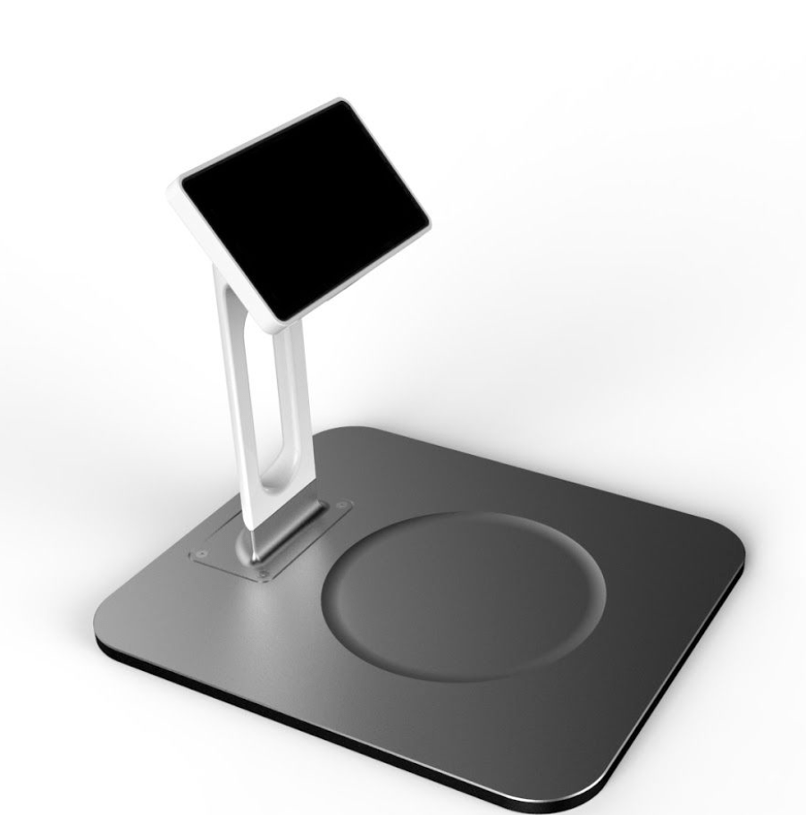
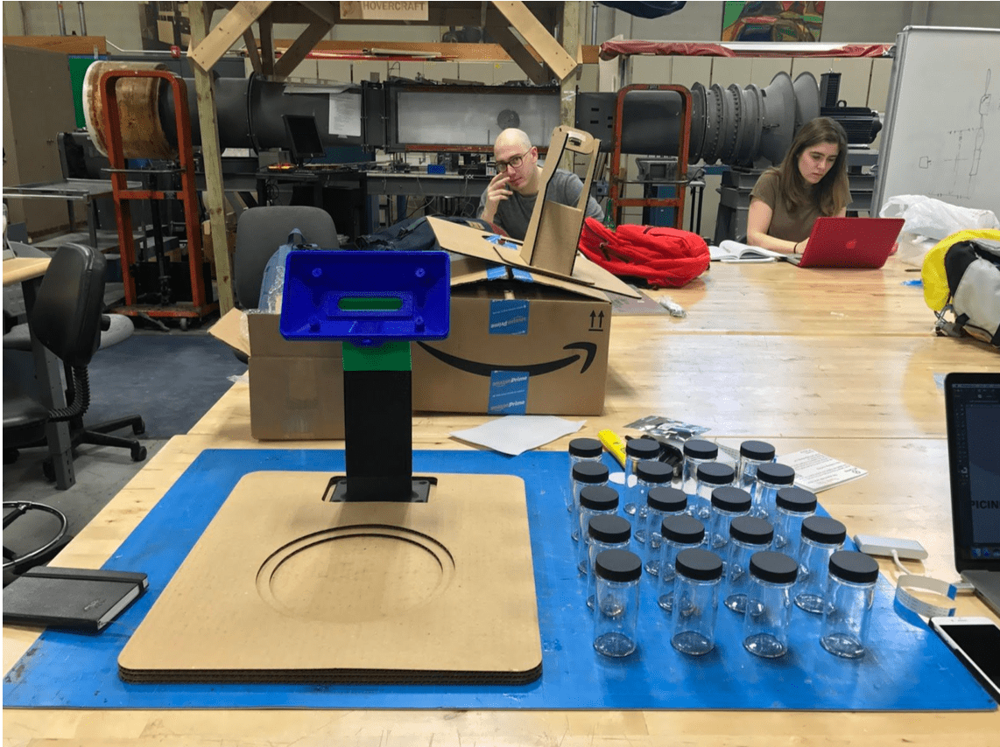
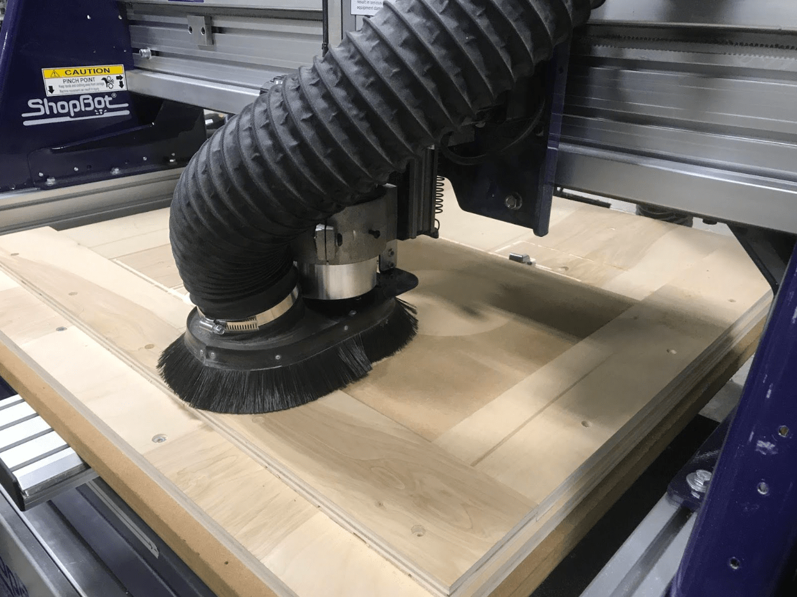
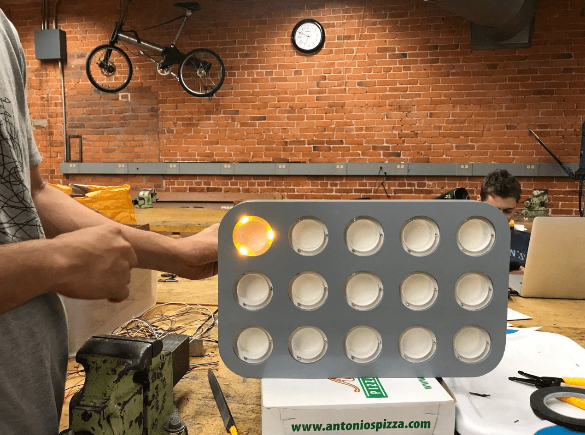

Nowadays, spices sitting in grocery aisles and on pantry counters are often untouched. The flavors contained inside these untouched bottles triggered globalization, imperialism, and the age of discovery throughout European and Asian history. In the present day, as spices became more widely available and relatively less “valuable”, cooking with spices can seem like a bit of a dark art despite their deep rich history. Sprinkling pinches of expensive powders with esoteric names to achieve subtle flavor combination isn’t attractive to many college students, who are often shopping and cooking for themselves for the first time, and it’s become more of a hassle to try a new spice given that one needs to purchase a large amount at once.
But spices are the key to good cooking. For ENGN 1000, Kenta Kondo, Mandi Cai, Arielle Chapin, Robert Wang and Nate Parrott asked: how can we initiate college students into the world of spices, giving them a familiarity with spices that’ll improve their cooking for their entire lives?
Background Research
The first round of user research was conducted at the local supermarket Eastside Marketplace. Seven people who walked by the spice aisle were asked a set of questions about their interaction and experiences with spices. Although the sampling size is not large, the organic flow of conversation proved to be helpful in guiding our initial direction.
Through the informal interviews, we began to see striking commonalities. Some concerns we noted include the spice section being overwhelming, spices are hard to find bunched up all together, and the spices are completely sealed. Notably, we observed that there exists obstacles in buying spices. They include cost, commitment, time and uncertainty. Cost and commitment were usually closely intertwined. Six out of seven said that the biggest deterrent in obtaining spices was the initial investment to buy the spices for a particular recipe. When a recipe called for a particular spice or sets of spices, they were dissuaded from committing to cook the recipe as many spices are costly. For example, one person was discouraged to cook a particular chicken rice pilaf recipe she found online after finding out that a spice jar of cardamom is eight dollars.
A forty year old man gave great insight for the project’s early development. He has been cooking almost everyday for his family and is comfortable using certain spices including salt, pepper, cinnamon, cayenne, cumin, and paprika. He said he has a rotational dinner plan that revolved around 14 dishes. However, as a father of three young children ("picky little rascals" as he described them), experimenting with new foods and flavors was not an option. He did not want to take the risk of cooking food that the children would not like to eat. Although he did mention that he would like try new spices out, the possibility of providing unenjoyable flavors to the children was not an option. Abstracting this idea to the larger cooking community, this uncertainty prevents flavor exploration. From these interviews, we began to think about two large questions: how do we make spices more accessible to people and how do we allow people to get more experience in using spices?
Initial Design and Prototyping
Low fidelity sketches and prototyping were used to conceptualize possible solutions and to contextualize the problem in a tangible form. We brainstormed and prototyped several approaches — from spice pop-up stores, to vending machines, to “spice cream” machines that let people explore the taste of spices on ice cream. We spent a lot of time thinking about the best setting in which to expose college students to spices.
User Research, Part 2
Figure 1: Empathy maps constructed from individual interviews
We interviewed plenty of students who said they used only one or two spices. Some said the spice aisle was the most intimidating part of the grocery store. Some had no spices, and didn’t see the value of spending money on an inventory of spices. Most felt like they spent a lot of time on cooking, and didn’t want to spend more time experimenting with spices. They felt that if they were going to experiment, they would want to be working with a recipe as a guideline, but they didn't want to buy specific spices that they wouldn't know how to use again, nor did they want to waste other ingredients that they had bought if they didn't end up liking what they cooked.
And then we remembered the dining hall. At Brown, many students eat in dining halls for a year or so before moving off-campus, or to dorms with kitchens. We realized that the dining hall was the perfect setting to expose students to spices. It offered unlimited food, so students felt free to experiment. It was repetitive, making spices an attractive way to make their food more interesting. It was centralized — whatever we ended up building could live in the dining hall. If we could make students comfortable and knowledgeable about spices in the dining hall, maybe they’d be ready to buy and use spices when they started cooking for themselves.
Final Design
It was critical that our creation offer a seamless interaction. We envisioned several methods of introducing spices to students in the dining hall, including a table that incorporated spices with the ability to light up and an interactive wall with dispensable spices. We considered the layout of a dining hall, with its surfaces for sliding trays and separate areas for different foods, in addition to the movement of student that its layout naturally created. It seemed optimal to have the user decide how to augment their food with a database of recipes in a short amount of time. With this in mind, we chose to create something that would identify the input dish and show corresponding recipes that would each light up an array of spices, allowing the user to focus on the spice-choosing experience. This approach would give the user the benefit of choosing through a limited number of recipes without the added mental effort of searching for recipes and buying spices, which we observed to be the main barrier to spice experimentation.
Image Recognition and Technology
We used a Raspberry Pi, connected to a camera and a 7-inch touch screen, to detect specific foods, present “spice recipes” and control LEDs to light-up suggested spices. When food is placed in front of the Pi’s camera, it submits an image to a Google App Engine web app we built. The web app submits the image to two third-party image-recognition services, which return a set of strings describing the foods in the image. These food names are queried against a database of “spice recipes,” which anyone can submit using a web form.
Image recognition proved to be a bit of a challenge. The first image-recognition service we tried, the Google Vision API, tends to label images of food as ‘food’, ‘dish’ and ‘produce’ — it frequently fails to return a specific name for the dish it sees. We switched to another service provided by Clarifai, which was built specifically for food — this API was much better at identifying and naming the particular foods it saw (‘pizza’, ‘salad’, ‘chicken’) but it wasn’t able to distinguish foods from non-foods. When there was no food in front of the camera, it would spuriously detect random foods. We chose to use both APIs in tandem — Google to detect whether or not there was currently food in front of the camera, and if so, Clarifai to detect the specific food name.
Since both APIs limit the number of queries that can be done from free accounts, we couldn’t continuously query them. Instead, we had to run motion detection on the Raspberry Pi, querying the API only when the camera’s image changed significantly. Motion detection was also important to ensure we didn’t submit blurry images of food being placed or removed.
Before we’d finished building the prototype, we brought the Pi and camera to the dining hall to test. Recognition was initially slow and inaccurate, but we tweaked parameters and camera settings to speed up recognition, such that food could be detected in 1–2 seconds. We later discovered that recognition accuracy was highly dependent on ambient lighting conditions, so we built an interface for adjusting the camera’s exposure and saturation on-the-fly. In the end, the device was able to recognize many foods well — salads and chicken were particularly easy to recognize, while foods like pizza and french fries tended not to work as well, and we aren’t sure why.
Each spice was lit up by 3 LED’s (Amber 591 nm LED Indication - Discrete 2.1V Radial) in parallel powered by a GPIO pin on the Raspberry Pi. In total, we used 15 GPIO pins - one for each spice. Initially, we investigated multiplexing as an option to reduce the number of pins needed to light up every spice. Multiplexing allows you to control 8 LED’s with only 3 pins connected to a shift register, which is optimal when controlling hundreds of LED’s. Eventually, we settled on using the simpler method of connecting a single LED to a GPIO pin and using 15 pins because it was easier to control via the user interface. A Python program running on the Pi flipped lights on and off aas users swiped through available recipes.
UI/UX
A crucial part of our user flow is the point at which the user explores the recipes and finds one they want to try. All the user cares about is eating something delicious--they want to leave with a better dish than the one they had when they first approached the device. When designing the exploration process, the main question at hand was: "How do we help them find a recipe they like while encouraging some exploration of new spices?". It was important to us that the user's goal would be met and that our goal of introducing them to spices was helpful instead of a distraction.
When approaching the design of the user interface, there were a few different decisions that needed to be made. One major decision that needed to be made was how exactly the user would navigate all the recipes before them. We explored interfaces that were based on user input, where the user would be shown a recipe that they could then use or "react" to by choosing to be shown something "spicier" or "smokier" (or other flavor possibilities--the ambiguity of this model was one of the reasons it did not end up being our final choice for the interface). We also explored interfaces that allowed a freer exploration model: one where the user could see a recipe and scroll through a list to see others, and one where the recipes were on cards that could be swiped through.
We did know that we wanted the first thing a user to see (after the device recognized their food) was a recipe, which is something they can engage with, and not a list, which instead is an onslaught of information that--because these are recipes--the user may not be able to judge based on the name alone.
We also knew that the user would have to be able to choose different foods to see recipes for, as the device may recognize multiple on one plate or be unsure of certain foods. Given the small size of the screen (800 x 480 pixels), having a horizontal navigation bar seemed more practical as it takes up less space than a vertical sidebar, and having it placed on top felt more logical as the choice of food would come before the choice of recipe.
Figure 2: Three mockups, including an "input-directed" one (top), a "scrollable" one (left), and a "cards" one (right)
Low resolution mockups were created in Adobe Illustrator after some initial sketching. The wireframes were made lightly interactive in Keynote (each mockup included a few different pages) and were then tested by a few students and one non-student. Participants understood how to use each interface, but preferred those that allowed for freer exploration.
Figure 3: Experimenting with smaller cards
We also felt that the "cards" approach encouraged focus on one recipe at a time. The previous iteration didn't feel quite as free as the "scrollable" interface, so we experimented with smaller cards, which made the recipes feel more easily explorable--with smaller cards, the surroundings recipes could be "previewed" before being focus on. What's more, the cards are very easy and quick to swipe between, providing an experience where all the possible recipes are laid out and ready to be accessed without any friction in looking between them.

Figure 4: Exploring design elements in the high resolutions mockups
The next iteration of mockups were high resolution--we were now testing out design choices like colors, how the seasonings would be displayed, fonts, etc. The warm colors here were chosen for their association with food, and the spices were displayed as photos to give the user a better idea of what that spice might be (a dried herb versus a ground powder, for instance). A spiciness level was indicated so that users could easily identify if the recipe would line up with their preferences (since spiciness is often an important preference).
In this iteration, the spices were tiled, with two in one row. This was initially chosen as they did not seem to need the space of an entire row, but feedback was received that the font for the spices was too small--which is especially important on a small screen--so the organization of the recipes was changed to accommodate the issue. Listing the spices in each recipe instead of tiling them allowed more focus on each, a bigger font size, and smaller cards (which meant a better preview of surrounding recipes).
In the final mockup, we gave the spices a good amount of space and color to bring focus to them. Because they are given this focus and are associated with a visual (and, eventually, a taste), we hypothesized that students who would use this regularly would start to recognize spices that they hadn't known before. In our interviews we found that the participants, when learning to cook and when buying new spices, would tend to lean towards spices that they recognized, especially when they could associate the them with specific dishes. With zest, the user "makes" those dishes themselves, and hopefully will want to use the same spices when they start to cook on their own.

Figure 5: The main page of the final mockup
Figure 6: The final frontend product shown on the website, here displaying recipes for chicken
The final frontend product was coded in HTML, CSS, and jQuery, and exists as a web page on our Google App Engine website (though it is a web page, it is only meant to be accessed from the built device). A carousel slider was used to control the cards, which can be swiped between on the touchscreen of the Pi. When a card is swiped to, it takes center stage on the screen, giving it focus. The surrounding recipes are at a lower opacity to add to that focus. The icon above each recipe is based on which spice is the biggest player in it (i.e. which spice has the most shakes)--each spice is associated with a certain icon, though some share the same one (for instance, chipotle, chili, and cayenne each shared the spicy pepper icon).
Figure 7: The idle state of the device when no food has been placed underneath. It returns to this state before a plate has been placed and after it has been removed
We needed an idle state for when no plate was present. We wanted it to fit with the style and provide some information for anyone who hasn't used the device before, opting for a short directive. A jQuery function controls the background, which is composed of spice icons that fade in and out in a random pattern. This gives the screen a little bit of life, encouraging someone walking by to give it attention, without distracting from the main text.
The interface was designed to function as the point of action for the user after putting down their food, and was integrated with the hardware of the device so that the user wouldn't have to think about anything except what recipe they wanted and how closely they wanted to follow it when using the spices.
Form Design
The final form was designed to be intuitive and approachable. Rounded edges and simple geometries invite the users to engage the device, with visual elements such as the detente and LEDs to guide the user through the process. These include the screen (GUI), platform and spice rack. The process that led us to this form included several different physical prototypes and numerous digital models.
We knew the design needed a camera above the dish to reliably identify the different types of foods. This constraint, along with the need for a section to store the spices and a screen for a GUI to display the information helped us narrow down the form.
After several iterations, we concluded the screen and camera should be housed in the same area to simplify the form as well as hide the camera- thus making the experience that much more mysterious and magical. The spice jars would then be housed in a separate assembly to the side.
After this general configuration was established, we looked at incorporating key hardware including a; raspberry pi 3, raspberry pi camera, 7” LCD touchscreen and LED’s. This also included cabling, wiring and fasteners and power supply. Digital models were then generated to establish the visual language needed to achieve the integrated and seamless experience as well as accounting for the rough volumes of the listed hardware.


In tandem with CAD modelling, low fidelity prototypes were created to gather ergonomic data, including heights and angles of various elements such as the screen and base. In addition, the precise camera angle for optimal image recognition was also determined through this adjustable low-fidelity mock-up.
With all the aforementioned factors accounted for, a Solidworks model was created which included accurate models of the LCD screen, Pi board and Pi Camera to ensure proper fit. A quick model of the final form was made through 3D printing and laser cutting. The jars were also set to the side to determine the scale of the rack. At this point we began to design the rack assembly. This was fairly straightforward as it translated the design language of the main console into something that had to hold 3 LED’s in a ring around each of the 15 available slots.



Figure 8: Prototype CAD models and cardboard prototypes
Prototyping
Having determined that everything was in order, we proceeded to make the final functioning model. This involved several prototyping machines, techniques and processes over a course of 2 weeks.
The console uses two main processes, the CNC for the MDF base and ABS 3D printing for the stem and screen/camera housing. The CNC was chosen for the base as it was a fairly simple form that needed very little subtraction to obtain the form that we desired. The printed ABS parts required a void in the center for the cabling and wiring to pass through as well as durability. Parts were then epoxied together and sanded smooth.

Figure 9: The base after CNC alongside 3D printed parts
The spice stand also used the CNC for the body and 3D printing for the more complex LED housing and diffuser. The acrylic diffuser rings were laser cut for precision and consistency.

Figure 10: The painted base and stand alongside the unfinished spice rack (top) and the painted spice rack with light-up acrylic rings (bottom)
Both console and holder underwent several cycles of priming/filling and sanding until we obtained the desired surface finish. At which point, we used 2-3 coats of enamel paint to create the smooth surface finish.
Figure 11: Wires to attach the screen to the Pi, which was housed in the "neck" of the stand
Figure 12: The final form with broccoli being identified and spices lighting up according to the currently-shown recipe
The final result was an accurate reproduction of our CAD model, with all internal electronic and hardware integrated seamlessly and functioning true to the design intent.
Beyond being a proof-of-concept, the physical object needed to be visually compelling enough to create that initial spark. Once that interest is established, the user's attention can be guided through the entire experience without thinking about the object itself. A successful physical form is one that holds together the various elements from the screen/GUI to the functional electronics inside to create a seamless experience.
Branding
Our branding was based on a friendly and warm color palette with easily identifiable icons and text. We chose colors that would be complementary to the natural shades of spices, with simple white icons that reflected the functionality of the object or process represented. The font, Apercu, was used for simplicity and readability throughout our user interface and signage. Icons were also created to easily convey the functionality of our device so that users would know what to do upon encountering its user interface. Our name, zest, was chosen to signify the simple and flavorful experience created by our project.
Conclusion
By combining our interests in cooking, computer science, human factors, industrial design, and mechanical engineering, we created a flavor experience that we believe can change the user’s perception on spice usage and spice experimentation. zest can be easily integrated into university dining halls or any space for communal dining, and can be extrapolated for use with other ingredients other than spices. For future exploration and iterations, we’d like to integrate a more powerful image recognition system trained on the specific dishes available in the dining hall that zest is stationed in. We realize that the food recognition element of zest is constrained by the capabilities of the technologies available at the current time. Our team would also explore the recipe submission aspect of zest and do more user testing with the recipe submission website to ensure its ease of use and track its popularity amongst our targeted audience.
Acknowledgements
We would like to thank Ian and Joe for supporting and guiding us throughout the projects. Special thanks to Christopher Bull and the Brown Design Workshop for providing the resources for prototyping this project. We would also like to thank Stephanie Gesualdi for ordering all the components necessary for the project.